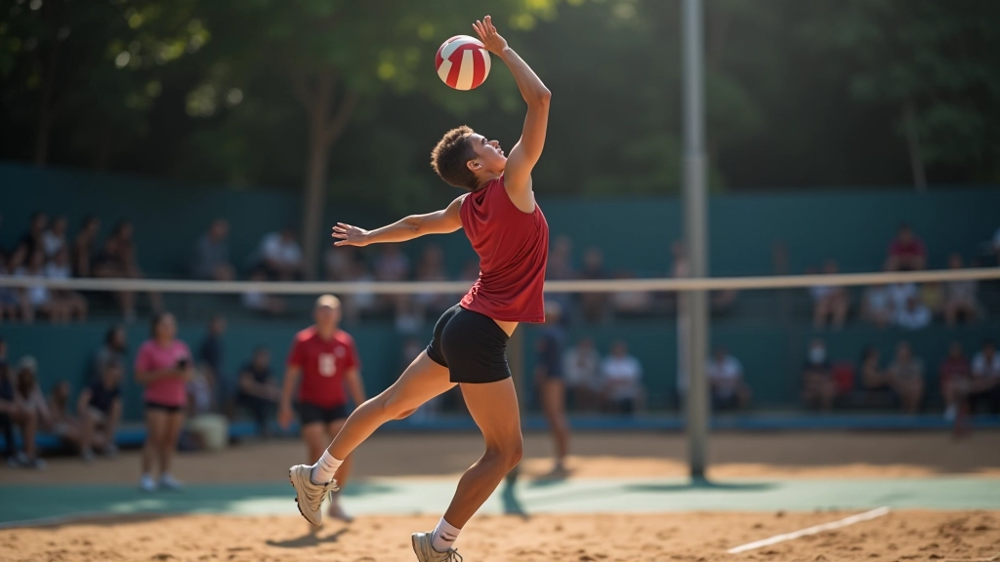
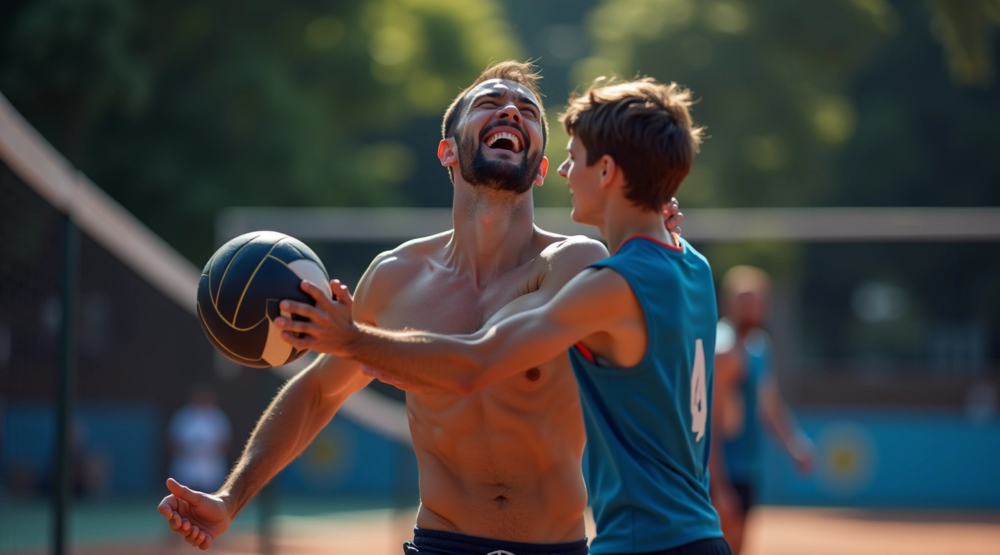
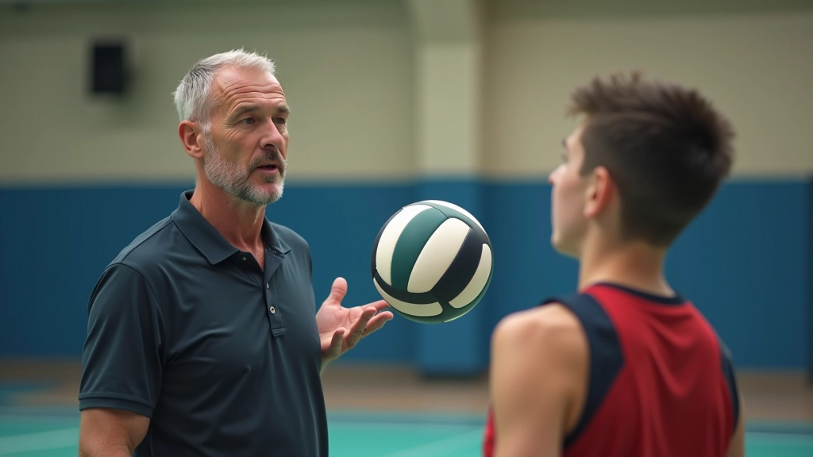
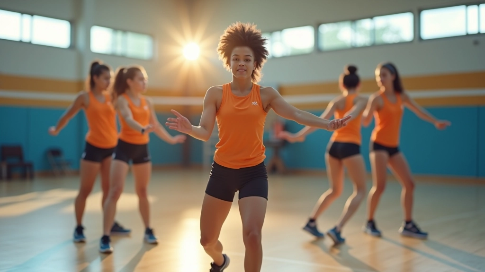
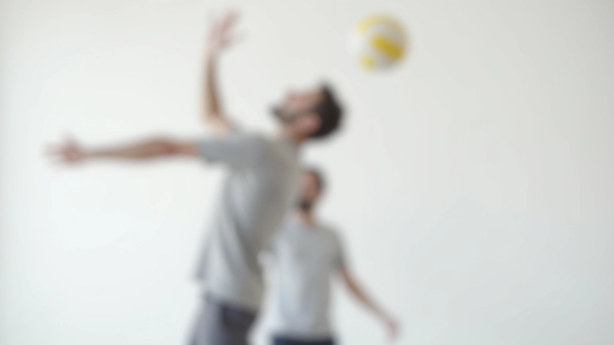

تقنيات الإرسال القفزي للمبتدئين
تعلم الخطوات الأساسية والوقفة الصحيحة لإتقان الإرسال القفزي من البداية
دليل شامل لحماية جسدك أثناء تطوير مهارات الإرسال القفزي


فريق المحتوى التحريري
كتبه فريق تدريب قوة الإرسال التحريري، متخصصون في تقديم إرشادات عملية وموثوقة لتطوير مهارات الإرسال القفزي.
الإرسال القفزي من أصعب المهارات في كرة الطائرة. يتطلب قوة متفجرة وتنسيقاً دقيقاً وتوازناً مثالياً. لكن هذا يعني أيضاً أن جسدك يتعرض لضغط كبير. والحقيقة أن معظم الإصابات تحدث لأن اللاعبين لا يعرفون الأشياء الخاطئة التي يفعلونها.
نحن هنا لتغيير هذا. بدلاً من التعلم من الألم، يمكنك تعلم الطريقة الصحيحة من الآن. هذا الدليل يركز على الإصابات الحقيقية التي نراها مراراً وتكراراً — والطرق الفعلية لتجنبها.

تعرف على ما تبحث عنه وأين تشعر به
يحدث عندما تحاول رمي الكرة بقوة دون تسخين مناسب. تشعر بألم حاد في الجزء الأمامي من الكتف، خاصة عند رفع ذراعك للخلف. معظم الحالات تبدأ صغيرة لكنها تزداد سوءاً مع الوقت إذا لم تعالجها.
الإرسال القفزي يتطلب انحناءة خلفية كبيرة. إذا لم تملك قوة أساسية كافية أو تقوم بالحركة بطريقة خاطئة، ستشعر بألم في الفقرات السفلية. هذا النوع من الإصابات قد يستغرق أسابيع للتعافي منه.
عندما تقفز، ركبتاك تمتص ضغط وزن جسمك مضروباً في سرعة الحركة. بدون تقنية صحيحة أو تقوية مناسبة، تبدأ الركبة بالشعور بالألم. الألم يبدأ بسيط لكن يصبح أسوأ مع كل قفزة إضافية.
يحدث عندما تحاول الضغط بقوة شديدة على الكرة عند الإرسال. معصمك ليس مصمماً للقوة الكاملة. بدلاً من ذلك، يجب أن يكون مرناً وسلساً. الألم يظهر عندما تحني معصمك للخلف أو تقبضه بقوة.
معظم اللاعبين يتجاهلون الإحماء. يصلون إلى الصالة ويبدأون بالإرسال مباشرة. هذا خطأ كبير. جسمك يحتاج إلى وقت لتحضير عضلاته والتعود على الحركات السريعة.
الإحماء الجيد يستغرق 10-15 دقيقة فقط، لكنه يقلل من احتمالية الإصابة بنسبة كبيرة. ابدأ بتمارين الحركة — دوران الكتفين، حركات الذراع بطيئة، مشي خفيف. ثم انتقل إلى تمارين الاستطالة الديناميكية — حيث تتحرك أثناء الاستطالة. هذا يسخن عضلاتك ويجهزها للعمل.


الحركة الصحيحة ليست فقط عن الأداء الأفضل — إنها عن حماية جسدك. عندما تستخدم الوضعية الصحيحة، توزع القوة على مجموعات عضلية متعددة بدلاً من الضغط على منطقة واحدة فقط.
ركز على هذه النقاط الثلاث: أولاً، قدماك يجب أن تكونا متباعدتين بعرض الكتفين. ثانياً، عندما تقفز، اثني ركبتيك قليلاً — لا تقفز بساقين مستقيمتين. ثالثاً، عندما تضرب الكرة، استخدم حركة سلسة من ساقيك إلى جسمك إلى ذراعك — لا تضرب بذراعك فقط.
عضلاتك القوية هي الدرع الذي يحمي مفاصلك. كلما كانت عضلاتك أقوى، قل احتمال إصابتك. لكن الأمر ليس فقط عن رفع أوزان ثقيلة — إنه عن تمارين محددة تقوي العضلات التي تستخدمها في الإرسال.
ركز على تقوية العضلات الأساسية في جسمك. هذا يشمل عضلات البطن، عضلات الظهر، والعضلات حول الكتف. تمارين مثل البلانك والقرفصاء تقوي هذه المناطق. حتى 3 مرات في الأسبوع لمدة 20 دقيقة يمكن أن تحدث فرقاً كبيراً. لا تحتاج إلى قاعة ألعاب رياضية غالية الثمن — يمكنك فعل معظم هذه التمارين في المنزل.
ابقَ في وضع تمرين الضغط لمدة 30-60 ثانية. هذا يقوي عضلات البطن والظهر الأساسية.
قم بـ 3 مجموعات من 15 قرفصاء. هذا يقوي ساقيك وعضلات الفخذ التي تحتاجها للقفز.
استخدم أوزان خفيفة، 3 مجموعات من 12 رفعة. هذا يقوي العضلات حول الكتف.
هذا ما لا يفهمه الكثير من اللاعبين الشباب. عضلاتك لا تنمو أثناء التدريب — تنمو أثناء الراحة. عندما تتدرب، تخلق ضغطاً على عضلاتك. عندما تستريح، تصلح نفسها وتصبح أقوى. بدون الراحة، جسمك يبقى في حالة إرهاق مستمرة.
خذ يوماً راحة واحداً على الأقل في الأسبوع. في هذا اليوم، لا تقم بتدريب مكثف. يمكنك المشي أو اليوجا الخفيفة، لكن دع جسمك يستريح فعلاً. أيضاً، احصل على 7-9 ساعات من النوم كل ليلة. هذا عندما يقوم جسمك بمعظم إصلاح وتقوية نفسه.
بعد التدريب: خذ 5-10 دقائق لاستطالة عضلاتك ببطء. هذا يساعد على تقليل الألم والتيبس.
الثلج عند الحاجة: إذا شعرت بألم أو تورم طفيف، ضع ثلج على المنطقة لمدة 15 دقيقة. هذا يقلل الالتهاب.
استمع إلى جسدك: إذا كنت تشعر بألم حاد، توقف عن التدريب. الألم الخفيف قد يكون طبيعياً، لكن الألم الحاد هو إشارة من جسدك.
كل ما تحتاجه هو خطة بسيطة: إحماء جيد، تقنية صحيحة، تمارين تقوية منتظمة، وراحة كافية. هذا كل شيء. لا تحتاج إلى أشياء غريبة أو مكملات غالية الثمن. فقط أساسيات بسيطة تفعلها بانتظام.
الفرق بين اللاعب الذي يصاب والذي لا يصاب ليس الحظ — إنه التفاني والانتباه للتفاصيل الصغيرة. ابدأ الآن، قبل أن تحتاج إلى التعافي من إصابة. حماية جسدك اليوم تعني لعب كرة الطائرة غداً — وبعد غد وبعده.
هذا الدليل معلومات تعليمية عامة فقط. نتائج التعلم تختلف من شخص إلى آخر. إذا كنت تعاني من ألم حاد أو إصابة موجودة، استشر طبيباً أو متخصصاً في العلاج الطبيعي قبل متابعة أي برنامج تدريب.